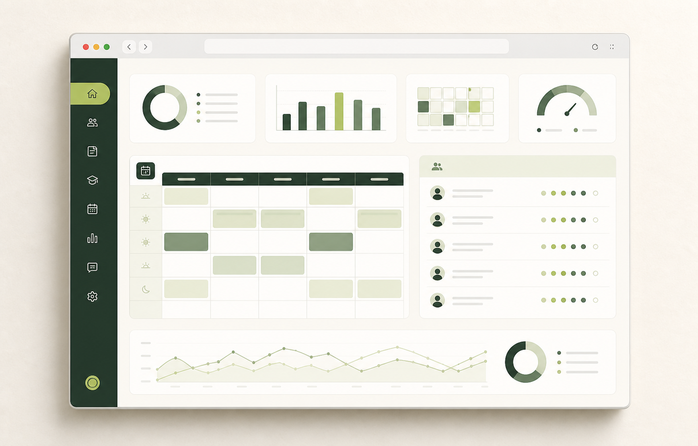

01Full-stack platformEducation technology · 2026
S.F. Memorial School ERP
A role-based school operations platform that brings daily administration, teacher workflows, and student self-service into one connected experience.
What it handles
Attendance, fees, notices, timetables, results, homework, and document access.
Built with
React · Express · MongoDB · JWT